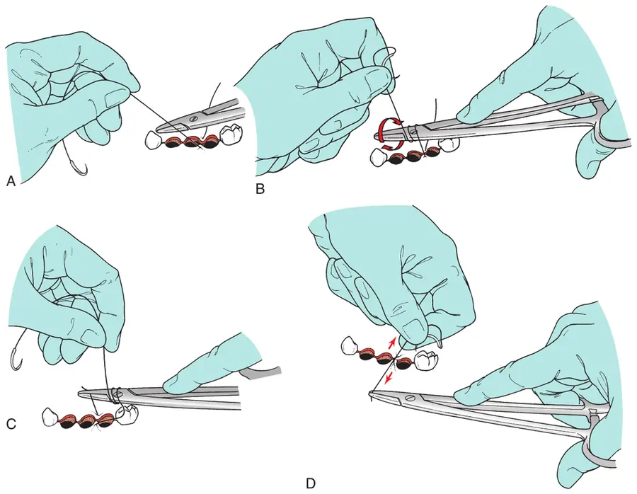
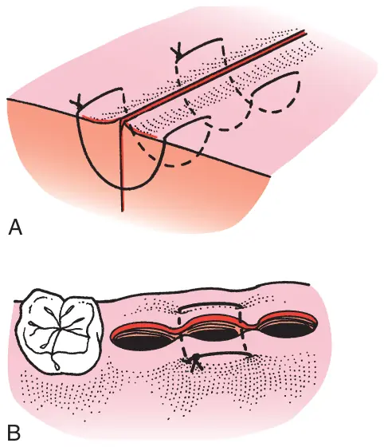

نسخه استخراجشده؛ ترجمه یا تأیید علمی انجام نشده است. وضعیت: captured
پنج کار بخیه:

دو ممنوعیت هموستاز: اگر بافت زیرین خونریزی دارد، مخاط سطحی یا پوست نباید بسته شود — خونریزی ادامهدار به هماتوم میانجامد. و بافت رویی هرگز نباید سفت بخیه شود تا خونریزی ساکت بند بیاید.
ابزار: نیدل هولدر ۱۵ سانتیمتر (حدود ۶ اینچ) با دستهی قفلشونده، شست و انگشت حلقه در حلقهها و اشاره در طول ابزار. سوزن: سههشتم تا نیمدایره با لبهی برندهی معکوس — لبهی برنده کمک میکند سوزن راحت از بافت سفت موکوپریوستئال بگذرد. شایعترین شکلها در جراحی دهان: سههشتم و نیمدایرهی برنده (PS-2، FS-2، X-1).
تکنیک — ساده به نظر میرسد ولی در عمل سخت است و تمرین میخواهد:
عدد ۳ میلیمتر: حداقل بافت میان بخیه و لبهی فلپ باید ۳ میلیمتر باشد تا سوزن یا نخ از فلپ بیرون نکشد.
مهمترین جملهی این درس: هدف بخیه صرفاً نزدیک کردن بافت است، پس نباید سفت بسته شود. بخیهی خیلی سفت باعث ایسکمی لبهی فلپ و نکروز بافت میشود و در نهایت نخ از میان بافت پاره میشود. نتیجه: بخیههای خیلی سفت بیشتر از بخیههای شل به باز شدن زخم میانجامند.

معیار بالینی: پس از بستن بخیه نباید هیچ سفیدشدگی یا ایسکمی آشکاری در لبههای زخم باشد. اگر بود، بخیه را بردار و دوباره بزن.
جای گره: نباید مستقیم روی خط برش بیفتد چون فشار اضافه به برش وارد میکند — گره را کنار برش، معمولاً به سمت فاسیال یا باکال بگذار.
گره ابزاری (instrument tie): اولین پاس دو حلقه در جهت ساعتگرد — همین حلقهی دوتایی بافت را نگه میدارد تا بخش دوم گره مربعی بسته شود. بخش دوم یک پیچ در جهت پادساعتگرد. بیشتر جراحان در نخ جذبی پاس سوم هم اضافه میکنند (دوباره ساعتگرد). دُم کوتاه نخ حدود ۱ تا ۲ سانتیمتر نگه داشته میشود و در پایان انتهاها حدود ۱ سانتیمتر یا کمتر بریده میشوند.
هنگام بریدن نخ، با نوک قیچی ببر تا ببینی چیزی بهجز نخ بریده نمیشود. در بیشتر موقعیتهای داخل دهان انتهای نخ بیش از ۱ سانتیمتر نباشد.
بستن فلپ سهگوش: پیش از بخیه، با الواتور پریوستئال شمارهی ۹ سمت غیرفلپِ برش را کمی بلند کن تا لبه آزاد شود و عبور سوزن آسانتر گردد. اولین بخیه روی پاپیلایی گذاشته میشود که برش رهاساز از آنجا زده شده — یک لندمارک قابل شناسایی که برای جااندازی درست فلپ سهگوش مهمترین است. سپس بقیهی بخش پاکتی و در آخر بخش عمودی. معمولاً دو بخیه برای بستن درست انتهای عمودی لازم است.
انواع بخیه:
زمان کشیدن بخیه: نخ غیرجذبی حدود ۵ تا ۷ روز. پس از آن هیچ نقش مفیدی ندارد و آلودگی زیرمخاط را بیشتر میکند. با نوک قیچی تیز بریده میشود و به سمت خط برش کشیده میشود، نه دور از آن.
نوع سؤال: ساخت کلمه · 5 خانه
حروف منبع: ا · ش · ا · ه · ر